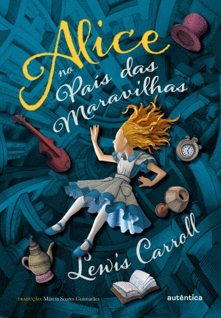

Estante de livros
"Sua biblioteca a um clique de distância"
Harry Potter e a Pedra Filosofal

Sinopse
Harry Potter nunca tinha ouvido falar em Hogwarts até o momento em que as CARTAS começam a aparecer no capacho do número 4 da rua dos Alfeneiros. Endereçadas com um LACRE PÚRPURA, elas são repidamente confiscadas por seus tios TERRÍVEIS. E então, no décimo primeiro aniversário de Harry, um homem GIGANTESCO com olhos luzindo como besouros negros chamado RÚBEO HAGRID entra intempestivamente com uma notícia ASSOMBROSA: Harry Potter é um bruxo e tem uma vaga na ESCOLA DE MAGIA E BRUXARIA DE HOGWARTS. Uma aventura inacreditável está para começar!
Fonte: Google books
| Data da primeira publicação |
Autor |
Idioma original |
Gêneros |
| 26 de Junho de 1997 |
J. K. Rowling |
Inglês |
Romance, Literatura infantil, Literatura fantástica, Alta fantasia |
O senhor dos Anéis: a sociedade do Anél

Sinopse
Numa cidadezinha indolente do Condado, um jovem hobbit é encarregado de uma imensa tarefa. Deve empreender uma perigosa viagem através da Terra-média até as Fendas da Perdição, e lá destruir o Anel do Poder - a única coisa que impede o domínio maléfico do Senhor do Escuro.
A Sociedade do Anel é a primeira parte da grande obra de ficção fantástica de J. R. R. Tolkien, O Senhor dos Anéis.
É impossível transmitir ao novo leitor todas as qualidades e o alcance do livro. Alternadamente cômica, singela, épica, monstruosa e diabólica, a narrativa desenvolve-se em meio a inúmeras mudanças de cenários e de personagens, num mundo imaginário absolutamente convincente em seus detalhes. Nas palavras do romancista Richard Hughes, “quanto à amplitude imaginativa, a obra praticamente não tem paralelos e é quase igualmente notável na sua vividez e na habilidade narrativa, que mantêm o leitor preso página após página”.
Tolkien criou em O Senhor dos Anéis uma nova mitologia num mundo inventado que demonstrou possuir um poder de atração atemporal.
Fonte: Google Books
| Data da primeira publicação |
Autor |
Idioma original |
Gêneros |
| 28 de Julho 1954 |
J.R.R Tolkien |
Inglês |
Literatura fantástica |
Percy Jackson e o Ladrão de Raios

Sinopse
A vida do adolescente Percy Jackson, que está sempre pronto para entrar em uma confusão, torna-se bem mais complicada quando ele descobre que é filho do deus grego Poseidon. Em um campo de treinamento para filhos das divindades, Percy aprende a tirar proveito de seus poderes divinos e se preparea para a maior aventura de sua vida.
Fonte: Google Books
| Data da primeira publicação |
Autor |
Idioma original |
Gêneros |
| 28 de Junho de 2005 |
Rick Riordan |
Inglês |
Mitologia grega, Romance |
Alice e o país das Maravilhas

Sinopse
Ainda garotinha, Alice Kingsleigh visitou um lugar mágico pela primeira vez e não tinha mais lembranças sobre o local a não ser em seus sonhos. Em uma festa da nobreza, a jovem vê um coelho branco. Alice o segue e cai em um buraco, indo parar em um mundo estranho: o País das Maravilhas. Lá, ela reencontra personagens que estavam guardados em sua memória através dos sonhos
Fonte: Google Books
| Data da primeira publicação |
Autor |
Idioma original |
Gêneros |
| Novembro de 1965 |
Lewis Carroll |
Inglês |
Drama, Ficção juvenil, Ficção Absurdista |
O diário de um Banana

Sinopse
Não é fácil ser criança. E ninguém sabe disso melhor do que Greg Heffley, que se vê mergulhado no mundo do ensino fundamental, onde fracotes são obrigados a dividir os corredores com garotos mais altos, mais malvados e que já se barbeiam
Fonte: Google books
| Data da primeira publicação |
Autor |
Idioma original |
Gêneros |
| 1 de Fevereiro de 2008 |
Jeff Kinney |
Inglês |
Ficção, Humor, Comédia |